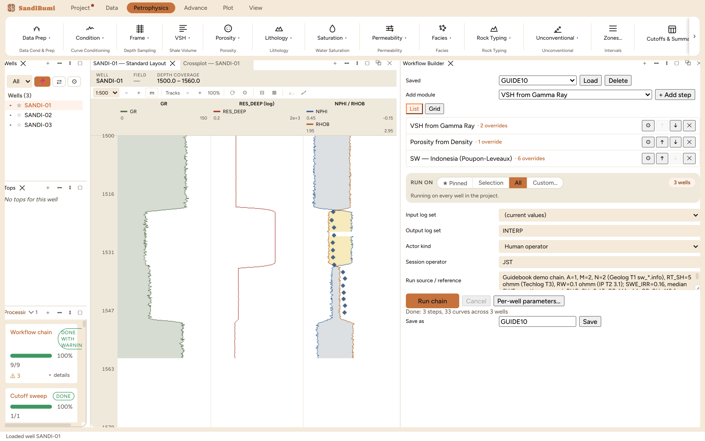
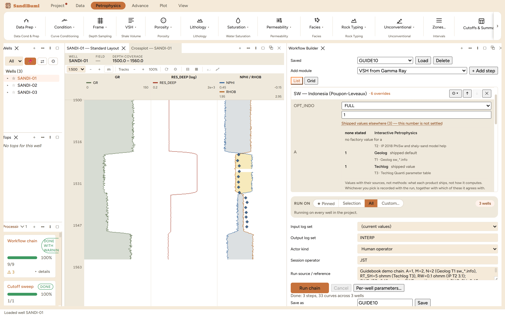

The Workflow Builder runs an ordered list of modules across many wells in
one click: pick the steps, set their parameters once, name who is running it
and on what basis, and press Run chain. Reach for it the moment the same
sequence is about to be repeated on a second well: a chain run is the same
physics as clicking the modules one by one, with the parameters written
down and the repetition delegated.
The pane

A saved three-step chain (VSH from Gamma Ray → Porosity
from Density → SW Indonesia), run on all three wells into the INTERP
set: "Done: 3 steps, 33 curves across 3 wells".
Steps are added from the module list and reordered with the
arrows; each step row counts its own parameter overrides (the example
chain carries 2, 1 and 6). Steps run in order; wells run in parallel
within each step.
The ⚙ editor per step opens the same parameter fields the
module's own dialog has, storing only what you change from the manifest
defaults. Zone parameters still win per zone at run time.
RUN ON is the standard well-scope pill; Input log set and
Output log set choose what the chain reads and the named set it
versions its outputs into.
Custody is part of the run: actor kind, session operator, and a
free-text run source travel with every output curve. Leaving the
operator empty refuses with "Enter the session operator identity before
computing."
Save as names the chain (GUIDE10 here); a saved workflow is
loaded back later or handed to Monte Carlo as the model to perturb.
Step by step
Open Petrophysics ▸ Batch ▸ Workflow…, add
the steps in the order the physics needs them (shale volume before
porosity, porosity before saturation).
Open each step's ⚙ editor and settle its parameters. An open
parameter ships no default; type the value and read its catalogue (see
below).
Fill the custody fields, pick the output set name, press
Run chain, and read the counted verdict: 3 steps × 11
output curves × 3 wells is the "33 curves" the example
reports.
Reading the result

The saturation step's editor with the catalogue open on the
tortuosity factor a: one product states no factory value, two
ship 1, each row carrying its evidence tier.
Every open parameter carries a "Shipped values elsewhere" catalogue: what
other products ship for the same quantity, with the evidence tier for each
claim. The pane's own closing line states the contract:
Values with their sources, not methods: what each product ships, not how it
computes. Whichever you pick is recorded with the run, together with which of
these it agrees with.
The rows are informational, not defaults: you type the number, and the
run records both the value and which catalogue entries it agrees with. A
parameter left unset does not run as zero: the chain refuses that well by
name before the step computes, e.g.
precondition 'A' failed before sw_indo ran: value NaN at sample 0 is not
finite. Fix the supplied value or its zone override.
QC and pitfalls
Order is physics. A saturation step reads the porosity the
chain just wrote; put it earlier and it reads whatever the input set
held before the run.
Write the run source as a record, not a note to self. The
example's run source names each value and where it came from; that text
is what a reviewer reads next year when the numbers are questioned.
A partial result says so. A well that failed a precondition is
reported per step and per well in the Processing panel's details; the
wells that passed still complete, so read the warning count, not just
the done line.